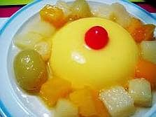

Puding Mangga Toping Buah

Bahan:
- Gelatin 1 sdm
- Gula 175 gr
- Air panas 250 ml
- Juice mangga murni 750 ml
- Susu evaporasi 250 ml
- Es 8 balok
- Potongan mangga segar untuk hiasan
Cara Membuat:
- Tuangkan gelatin, gula serta air panas dan aduk di atas api yang kecil sampai berbaur rata
- Di dalam mangkuk, tuangkan jus mangga, susu serta balok es, aduk hingga rata.
- Setelah campuran gelatin mendidih, tuangkan pada mangkuk jus mangga tadi, dan aduk hingga es meleleh. Diamkan selama kurang lebih 3 jam sampai adonan membeku.
- Hiasi puding dengan potongan mangga segar dan buah-buahan lain yang Anda ingin tambahkan.
- Dan siap untuk disajikan.